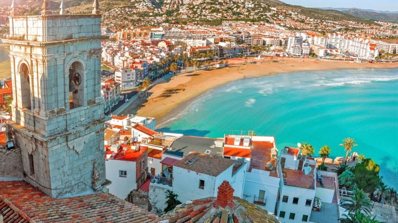

Author: Predut Alexia
Date: January 1, 2024
The first day of a new year holds a special kind of magic. It is like a blank page in a book, waiting to be filled with stories of hope, growth, and new experiences. For many, it is a time to reflect on the past year and set intentions for the one ahead. The possibilities seem endless, and there is an undeniable energy in the air as everyone embraces the idea of a fresh start. Whether you are making resolutions or simply looking forward to the unknown, this day feels like an opportunity for something new.
On this day, people often find themselves surrounded by the warmth of family and friends, sharing laughs and memories while looking ahead to what is next. It is the perfect time to let go of the things that held you back and focus on what is to come. No matter how big or small, the first day of the year encourages a mindset of optimism and growth. It reminds us that no matter where we have been, we have the power to shape our future.
As the day unfolds, there is a sense of excitement in the air. The world feels full of potential, and for a moment, it seems like anything is possible. Maybe you take the time to plan out goals, or perhaps you simply enjoy the quiet of the day, appreciating the opportunity to reset. The beauty of the first day of the year lies in its simplicity: it is a moment to pause, reflect, and step forward with a renewed sense of purpose.
Author: Predut Alexia
Date: February 14, 2024
Valentine's Day, once considered just a modest celebration of love, has transformed into a global phenomenon in recent years. What was once a day primarily for couples to exchange cards and small tokens of affection has evolved into a celebration that embraces all kinds of love-romantic, familial, and even self-love. From extravagant gifts to heartwarming gestures, Valentine's Day has become a time to spread positivity and appreciation to everyone around us.
One of the reasons for this surge in popularity is the way brands and social media have embraced the holiday. Whether it's through vibrant marketing campaigns or hashtags filled with love stories and creative date ideas, Valentine's Day has found its way into the hearts of many. The celebration is no longer limited to a romantic dinner or a box of chocolates; it is now a day filled with experiences, thoughtful surprises, and moments that create lasting memories.
Beyond romantic love, the rise of "Galentine's Day" and other inclusive celebrations has expanded the holiday's appeal. Friends, coworkers, and even pets are getting their share of the love. This broader interpretation of Valentine's Day has allowed more people to feel included and to take part in the festivities, whether they are in a relationship or not. As it continues to grow, Valentine's Day remains a reminder of the importance of love, kindness, and connection in our lives.
Author: Predut Alexia
Date: April 1, 2024
April 1st, widely known as April Fools' Day, is a celebration of humor, creativity, and a little bit of mischief. Each year, this day brings out the prankster in many of us, as friends, family, and even big brands join in on the fun with harmless jokes and playful tricks. It's a day when the unexpected becomes the norm, and everyone keeps a watchful eye out for anything that seems just a bit too good to be true.
From classic pranks like fake bugs on pillows to elaborate hoaxes by media outlets and companies, April Fools' Day has grown into a beloved tradition worldwide. Social media has amplified the fun, with viral videos and clever memes spreading laughter across the globe. Some of the most memorable pranks come from companies that release fake products or share outlandish announcements, keeping audiences guessing until the truth is revealed.
But beyond the jokes, April 1st is a reminder not to take life too seriously. In a world where stress and challenges are part of everyday life, a day dedicated to laughter and playfulness is a welcome break. Whether you are planning a clever ruse or simply enjoying the fun from a distance, April Fools' Day offers a chance to share joy and a smile with those around you.
Author: Predut Alexia
Date: June 23, 2024
The arrival of June 23rd marks the official start of the summer holidays, a time filled with sunshine, adventure, and well-deserved relaxation. As school doors close and schedules become a bit more flexible, the anticipation of warm days and long evenings sets in. It's the perfect opportunity to step away from routines and dive into the season of exploration and fun.
For many, summer is all about embracing the outdoors. Whether it is spending time at the beach, hiking through nature trails, or simply enjoying a picnic in the park, there's something about this season that invites us to reconnect with the world around us. It's also a chance to catch up with friends, make new memories, and indulge in spontaneous road trips or cozy backyard barbecues.
But summer isn't just about travel and adventure. It's also a great time to relax, read a good book, or binge-watch a favorite show without the pressure of a packed schedule. The freedom of summer holidays allows us to recharge, reset, and enjoy life at a slower pace. As June 23rd approaches, there's a sense of excitement in the air - a reminder that summer is not just a season, but a feeling of joy, freedom, and endless possibilities.
Author: Predut Alexia
Date: August 8, 2024
A holiday at the seaside in Spain is the perfect blend of relaxation and adventure. With its golden beaches, crystal-clear waters, and vibrant coastal towns, Spain offers a seaside escape like no other. Whether you are looking to unwind under the sun or dive into exciting water sports, the Spanish coast has something for everyone.
The charm of seaside destinations like Costa Brava, Costa del Sol, or the picturesque shores of Mallorca lies in their beauty and laid-back atmosphere. You can start your mornings with a refreshing swim, spend afternoons exploring charming streets, and end your evenings with delicious tapas by the sea. There's nothing quite like the sound of waves and the gentle sea breeze to wash away the stresses of everyday life.
Beyond the beaches, Spain's coastal towns are brimming with culture and history. You can explore ancient castles, visit bustling markets, or take a boat tour to discover hidden coves. Whether you are traveling with family, friends, or on a solo adventure, a holiday at the seaside in Spain promises sun-soaked days, unforgettable experiences, and a taste of the vibrant Spanish lifestyle.

Click here to go on "About me" page
Click here to go on "Formular" page
© 2025 Predut Alexia - Blog